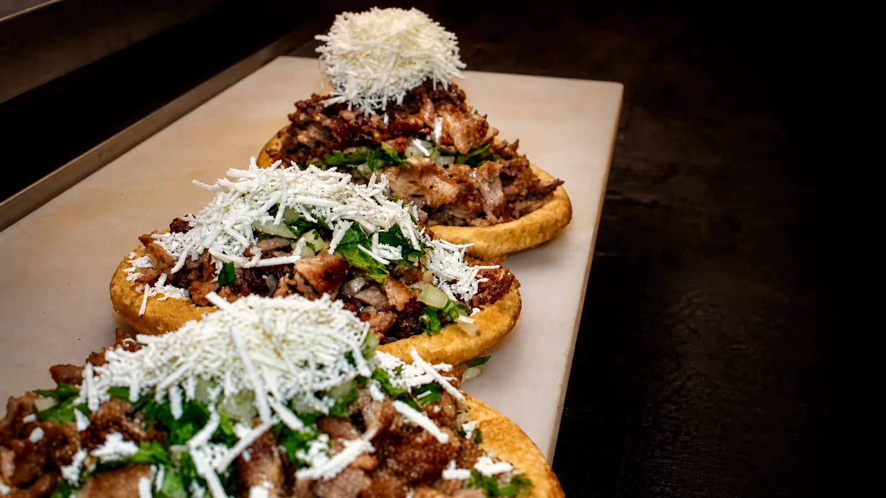
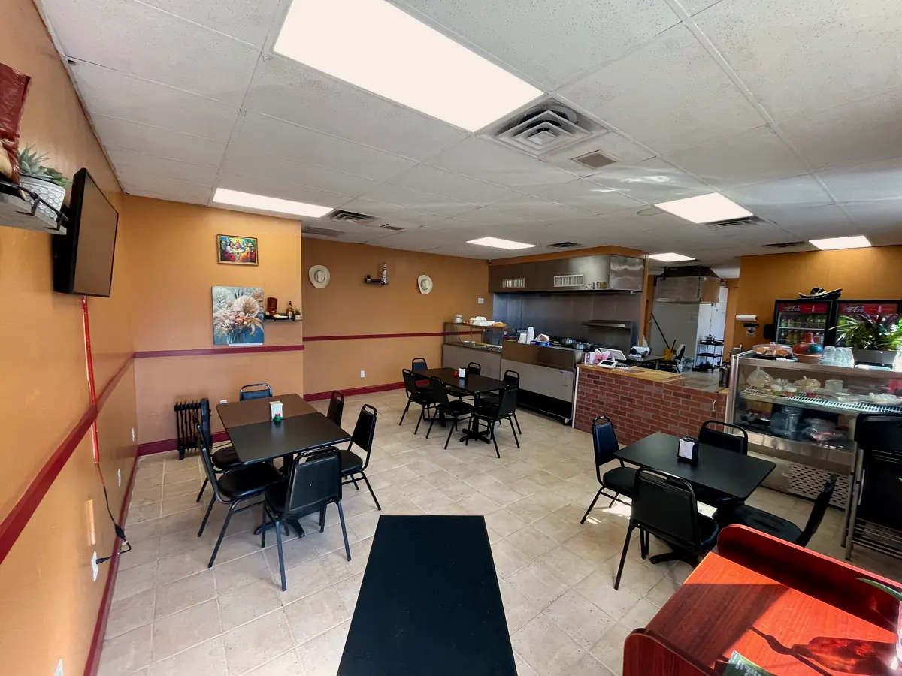
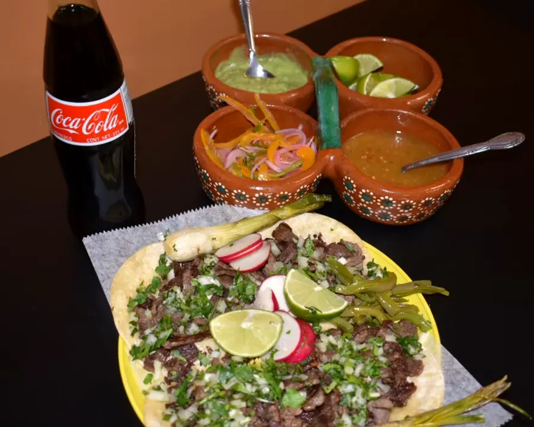
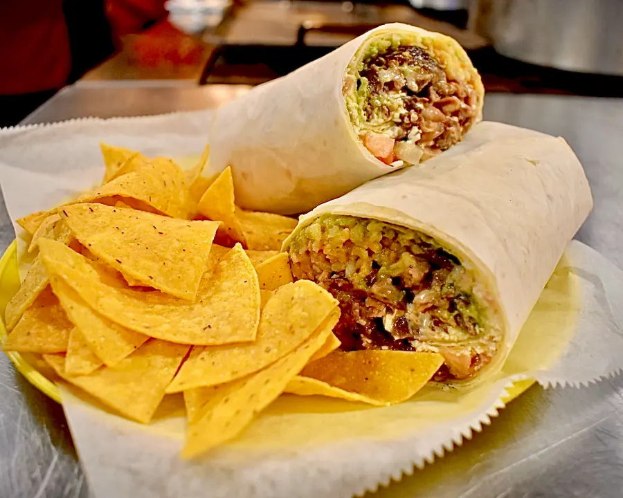
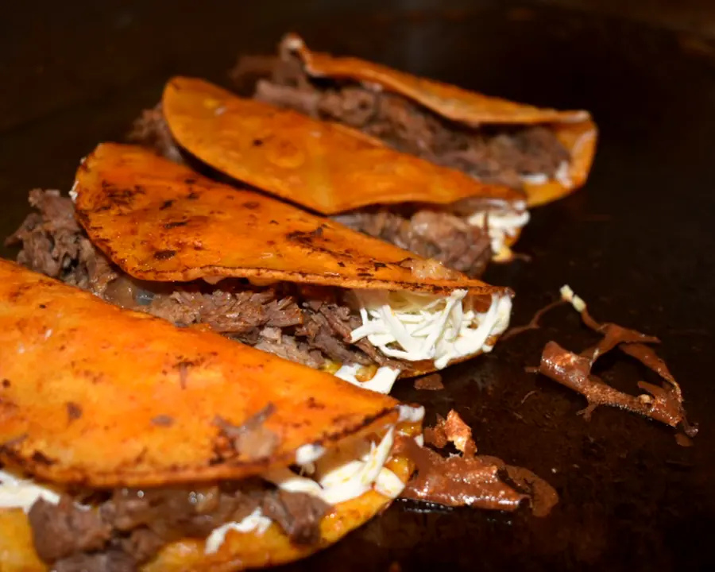
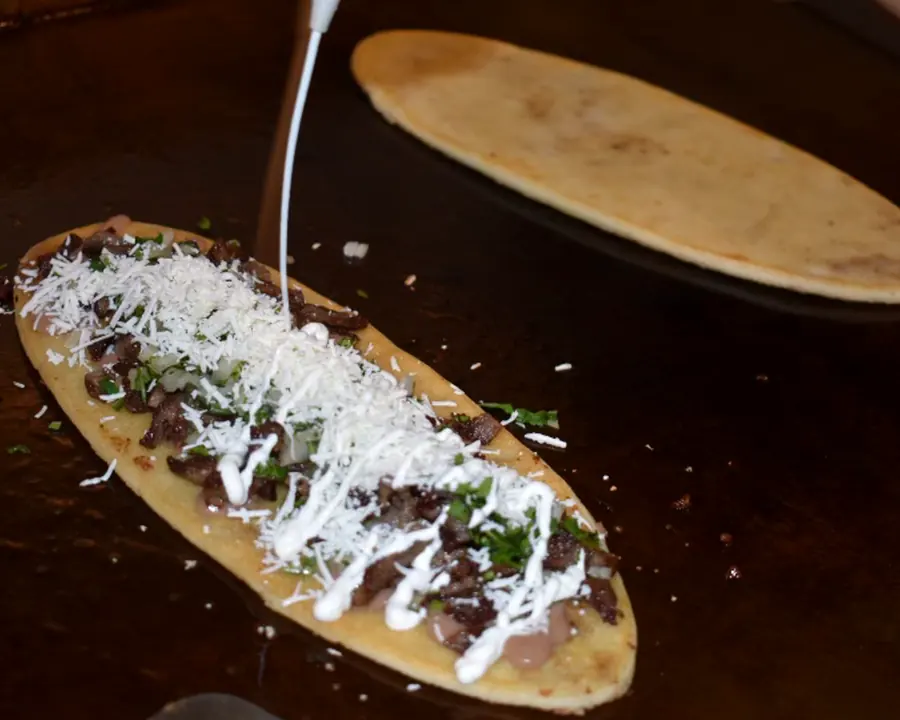
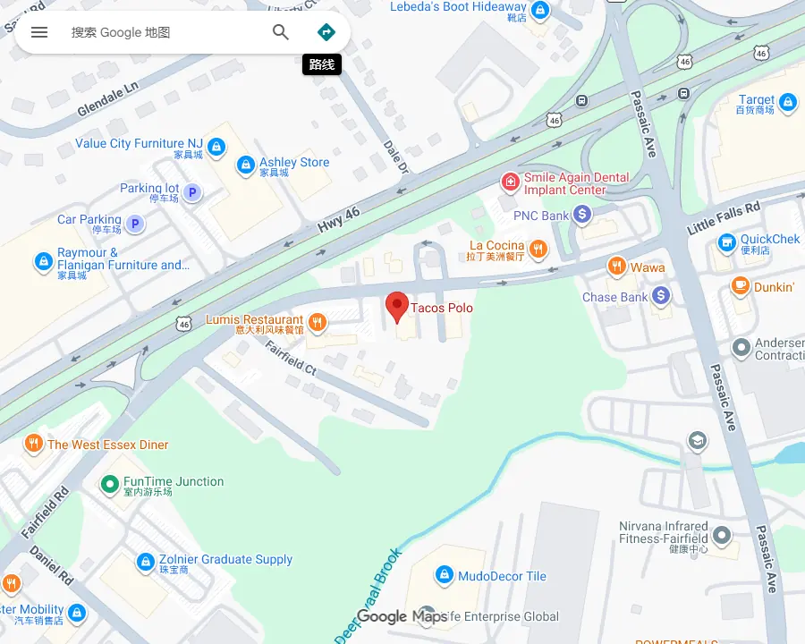

Order of Tacos $10
Four tacos; choose your selection when ordering.

Family-owned · Fairfield, New Jersey
Made with the Mexican flavors we grew up with — ready for an easy lunch, a quick pickup or your next gathering.

16 Little Falls Rd.From our house to yours
Tacos Polo began with catering from home and grew by word of mouth. Today, the family owned and operated taqueria welcomes Fairfield with Mexican street-food inspired dishes and the same warm, straightforward hospitality.
“Gracias por ser parte del sueño de Tacos Polo.”
Meet us in Fairfield →Made here
Real dishes and catering from Tacos Polo, presented with a cleaner, consistent crop.




Open six days
Dine in, take out, or order ahead for pickup.
Feed the whole crew
The business started in catering. Let the family help make your next gathering easier, with tacos, burritos, tortas, quesadillas and more.
Plan catering
16 Little Falls Rd.
Fairfield, NJ 07004